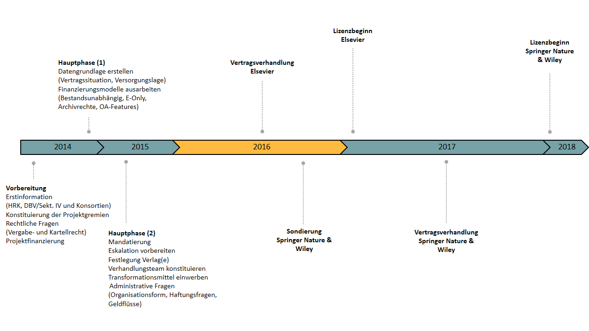

Screenshot, Jan 2013
Screenshot, Jan 2013
In a joint effort, basically all German universities take a stand to achieve
from the major publishers Springer, Wiley and Elsevier.

as of today:
// DEAL is prepared to continue negotiations // at any time on the basis of its clearly defined goals // and “what it wants to buy".
... like google scholar to find a related preprint/postprint:

... like
... via a good old email

Just do what would help you:
... a bit:
...and let me tell you that the handling editors typically have a good understanding for that...
— highlando (@jnhlnd) July 14, 2017
Questions?